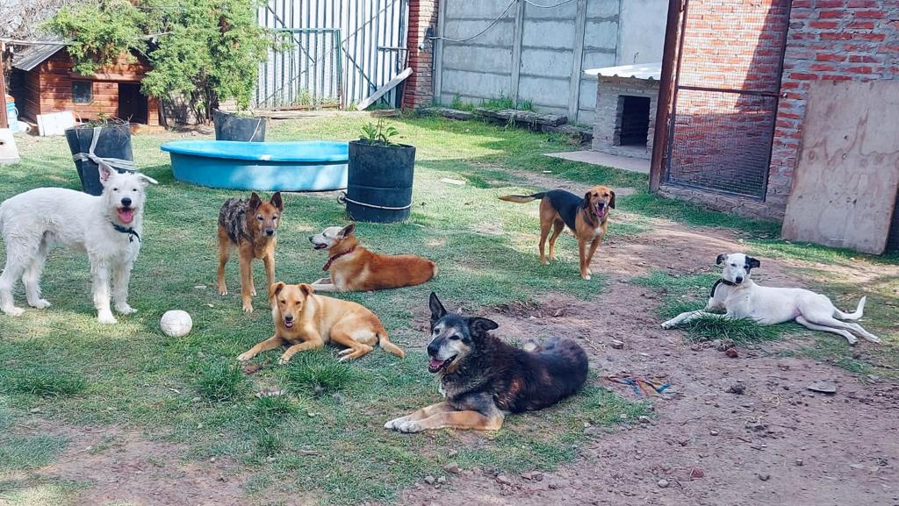
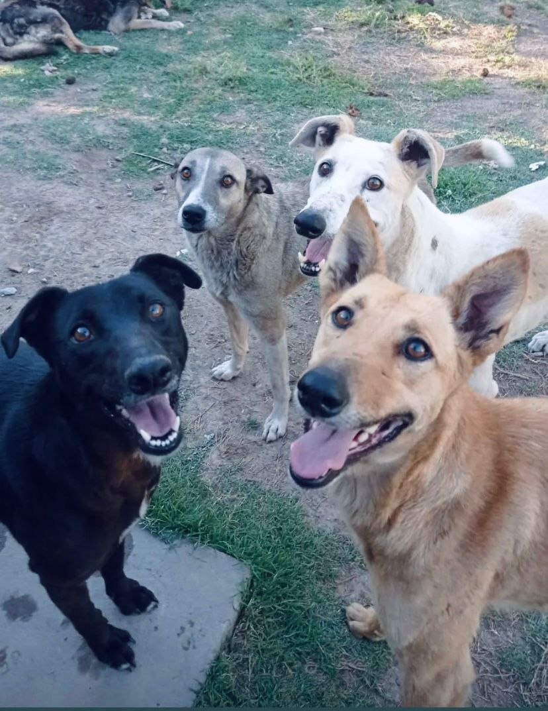
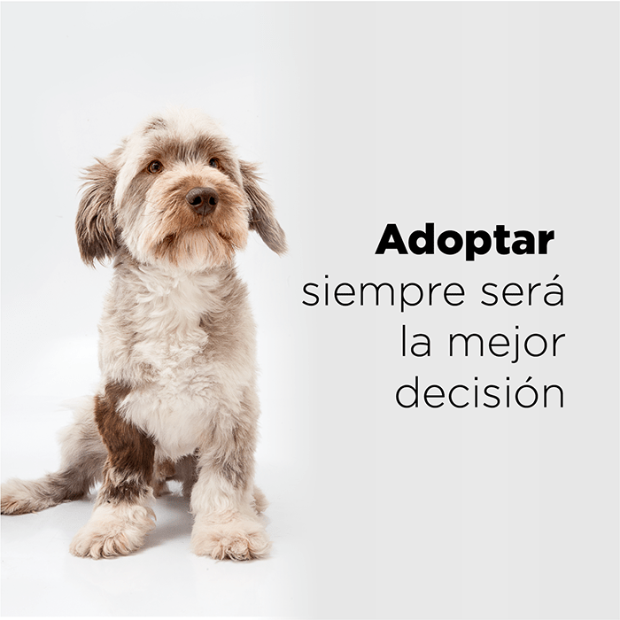
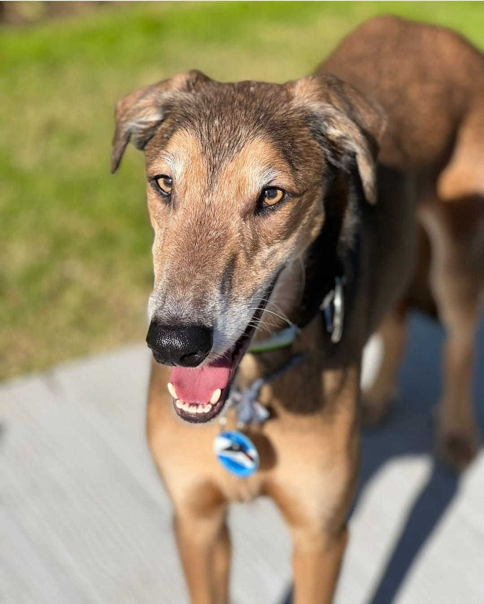

¿De dónde provienen las mascotas que están publicadas en ésta Web?
Todas las mascotas que recibimos en proteccion animal funes son rescatadas. Son animales que se
encontraban en situaciones de calle, abandono o maltrato. Gracias al trabajo de rescatistas logramos
ayudarlas a recuperarse brindándoles un hogar de tránsito y toda la atención de especialistas. Estas
mascotas ya estàn preparadas para iniciar una adaptaciòn y poder integrar una nueva familia.

Nuestro objetivo es concientizar a las personas sobre la importancia de la castracion y la teniencia
responsable.
los animales sufren y sienten, y consideramos que merecen una vida digna al igual que cualquier humano.



Un perro adulto se adapta con facilidad a su nuevo hogar
La etapa de adaptación y aprendizaje de las normas del hogar para un perro adulto será mucho más fácil,
debido a que viene de un lugar donde le han enseñado a comportarse y a seguir las reglas; un perro como
estos estará agradecido si le brindan un lugar estable, con comodidad, amor y mucho cariño. De seguro se
sentirá en confianza si le ofreces atención una vida digna.
¿Por qué adoptar un perro adulto?
Es la mejor decisión que puedes tomar, si quieres tener un compañero fiel y de paso puedes hacer una
buena acción por el perro. Es importante saber que elegir un perro adulto es darle una nueva
oportunidad
a aquellos perros que tienen menos opciones de ser adoptados; estos perros suelen permanecer una
mayor
cantidad de tiempo, en las Guarderías, refugios o fundaciones, incluso algunos de ellos terminan
muriendo porque no logran encontrar una familia que los adopten.